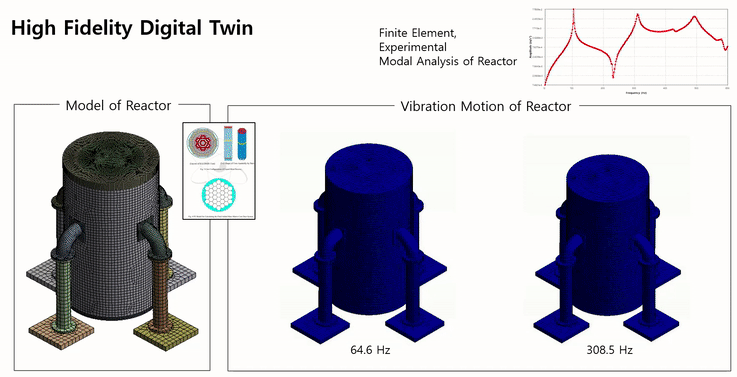
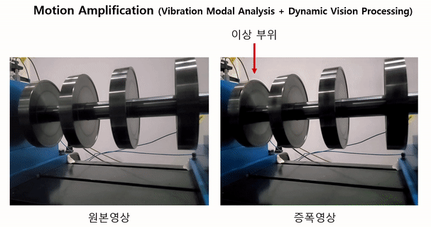
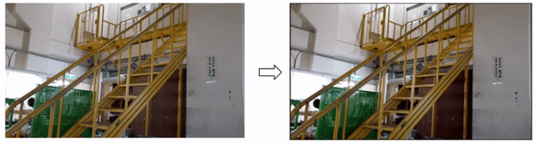

Research
Vibration Analysis & Condition Monitoring

- Research
- >
- Vibration Analysis & Condition Monitoring
Vibration Analysis and Recognition
진동공학은 구조물의 크고 작은 운동을 연구하는 학문으로, 구조설계와 센서의 설계에 있어서 필수적인 기반 기술입니다. Human Lab에서는 이중에서 복잡계(Complex), 연성계(Coupled System), 회전계(Rotor)의 구조동역학에 관심을 갖습니다. 이는 4차 산업혁명의 기반이 되는 물리기반 고정밀(High Fidelity) Digital Twin을 수립하는데 있어서 필수적인 기반 기술입니다. 현대 제조업 또는 인프라의 구조는 복잡한 외형과 재료 구성을 가지고 있으며 여기에는 구조-구조 연성, 구조-유체 연성, 구조변수의 불확실성, 국소변형(예: Crack), 연결부위의 변형, 비선형성 등 기초적인 수단으로는 모델링과 해석이 어려운 현실의 문제가 수반되어 있습니다. 이에 대한 정밀한 동적모델(Dynamic Model)을 얻기 위해 Human Lab에서는, 연성계를 적절하게 모델링(Substructuring, Fluid-Structure Interaction) 하고 그 차수를 줄이는 기법(Model Oder Reduction), 모르고 있지만 중요한 구조변수를 실험치로 규명하는 방법(System Parameter Identification), 불확실성의 효과를 예측하는 방법(Uncertainty Assessment), 정밀한 Digital Twin을 수치모델-실험치 비료를 통해 얻는 방법(FE Model Correlation Analysis, Model Updating, Surrogate Model)을 연구하고 있습니다. 특별히, AI를 FEM과 접목하여, 정밀한 Digital Twin을 얻을 수 있는 미래연구도 수행하고 있습니다.
본 연구실에서는 이와 같은 구조 동역학의 State-of-the-Art 모델링 및 해석 기법을 활용하여 차세대 원자력 발전소의 Digital Twin 수립 및 진동해석을 수행하였으며, 안전을 위한 상세 진동해석을 수행하고 있습니다. 또한 발전소, 인프라 등의 고장진단, 수명예측을 위한 PHM 분야에 Digital Twin 모델링 기법을 적용하여 가상공간에서 고장데이터를 얻을 수 있는 독자적인 방법을 개발하고 있습니다. 또한 진동공학에 영상신호처리 기법을 퓨전하여 Motion 증폭 방법을 개발하였으며, 이를 통해 센서의 부착이 없이 영상을 이용하여 직관적으로 고장 부위를 탐지하는 기술을 개발하고 있습니다(모션 증폭 카메라, 아래 동영상 참조). 고장진단 분야에 있어서 AI기반의 Anomaly Detection 알고리듬과 고장을 시각화 하는 기술, 그리고 단순한 고장진단이 아니라 고장의 메커니즘을 물리적으로 파악할 수 있는 Physically Explainable AI 연구를 수행하고 있습니다.

- Coupled field dynamic analysis including fluid-structure, biosystems, sub-structured systems
-
Uncertainty quantification
- Inverse Problems of structural vibration for identification
-
Structural health monitoring
-
Physical information and deep learning combined modeling
-
High-fidelity dynamic Digital Twin
Structural Vibration & Health Monitoring (concept)



원본영상 증폭영상